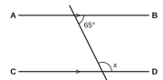
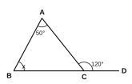
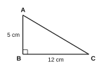
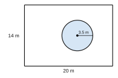
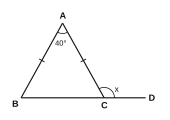

| For examiner's use only | |
|---|---|
| PART I – A | / 30 |
| PART I – B | / 20 |
| PART II | / 50 |
| Total | / 100 |
Part A – Answer all questions in the space provided. (2 marks each)
Write the general term (nth term) of the number pattern 5, 8, 11, 14, …
Write the number 45 as a binary number (in base two).
Simplify: 213 ÷ 134
The marked price of a shirt is Rs 2400. Find its selling price when a 15% discount is given.
Factorise: x2 + 7x + 12
Simplify and give the answer with a positive index: a3 × a5 ÷ a−2
Write 0.000507 in scientific notation.
Solve: 2(x − 3) = x + 4
In the figure, AB ∥ CD. Find the value of x.

In the figure, the side BC of triangle ABC is produced to D. Find the value of x.

Find the circumference of a circle of radius 7 cm. (π = 22/7)
Find the length of AC in the right-angled triangle ABC.

Solve the inequality 2x + 3 < 11 and write the greatest integer value of x that satisfies it.
A = {factors of 12} and B = {factors of 18}. Write the elements of A ∩ B.
A bag contains 3 red balls and 5 blue balls of the same size. One ball is taken at random. Find the probability that it is red.
Part B – Answer both questions on this paper. (10 marks each)
The figure shows a rectangular garden of length 20 m and breadth 14 m. There is a circular pond of radius 3.5 m in it. (π = 22/7)

In a class of 40 students, 25 play cricket, 18 play volleyball and 7 play both games.
Answer five questions only. (10 marks each)
An incomplete table of values for the function y = 2x − 3 is given below.
| x | −1 | 0 | 1 | 2 | 3 |
|---|---|---|---|---|---|
| y | −5 | … | −1 | … | 3 |

(π = 22/7)
The marks (out of 10) obtained by 20 students for a quiz are shown in the frequency table below.
| Marks | 4 | 5 | 6 | 7 | 8 |
|---|---|---|---|---|---|
| No. of students | 2 | 5 | 6 | 4 | 3 |